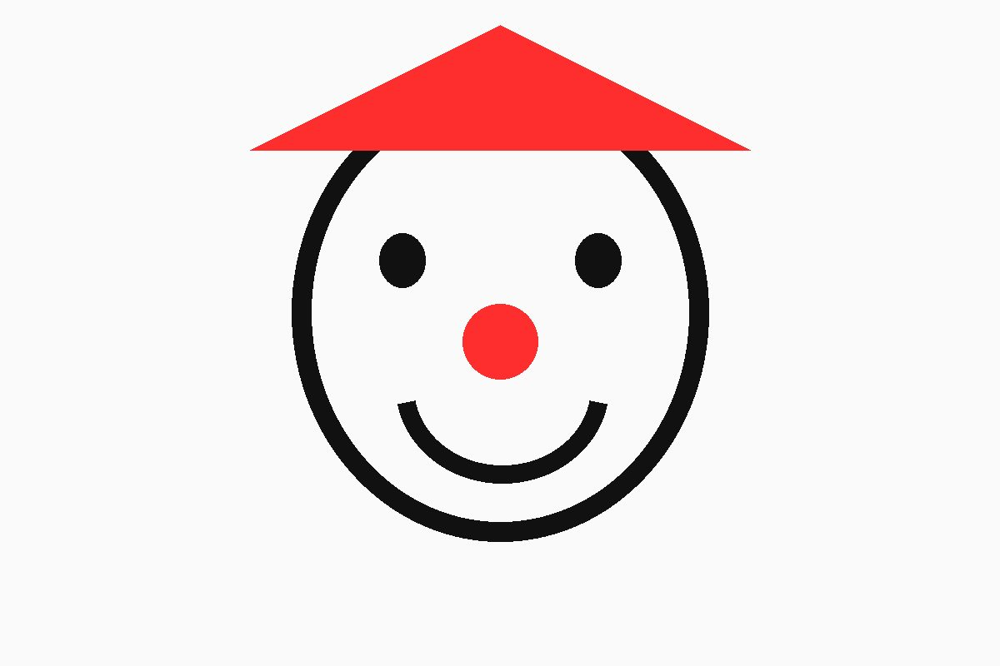

Gut lesbar.
Informationen sollen ohne Lupe verständlich sein. Darum setzen wir auf große Schrift, deutliche Kontraste, sprechende Linktexte und eine Navigation, die auf jeder Seite gleich bleibt.
WARUM WIR DAS MACHEN
ZIRKUS! ist ein erfundenes Kulturfestival mit einer einfachen Überzeugung: Staunen gehört allen.

DER ANFANG
Die Idee zu diesem ZIRKUS!-Vormittag entstand aus dem Wunsch, Seniorinnen und Senioren ein eigenes Kulturangebot zu machen – nicht als Randprogramm, sondern als Hauptpublikum. Viele von Ihnen haben Lust auf neue Eindrücke, gute Unterhaltung und gemeinsame Erlebnisse. Genau diese Neugier feiern wir.
Unser fiktives Team stellte sich einen Zirkus vor, der nicht auf Lautstärke und Tempo setzt, sondern auf Können, Humor und Nähe. Eine Vorstellung, in der Artistik nicht nur als Sensation funktioniert, sondern als Kunstform, die Geschichten erzählt. Ein Ort, an dem Sie im Mittelpunkt stehen und Ihr Enkelkind genauso willkommen ist wie Ihre Begleitperson.
UNSERE HALTUNG
Informationen sollen ohne Lupe verständlich sein. Darum setzen wir auf große Schrift, deutliche Kontraste, sprechende Linktexte und eine Navigation, die auf jeder Seite gleich bleibt.
Einladend heißt auch: Wege erklären, Fragen beantworten und Hilfe anbieten. Die fiktive Planung berücksichtigt Sitzgelegenheiten, barrierearme Zugänge und eine gut erkennbare Anlaufstelle.
Wir wollen Generationen nicht in Schubladen stecken. Ältere Gäste sind keine Begleitung am Rand, sondern ausdrücklich angesprochenes Publikum und Mittelpunkt unseres Konzepts.

DIE MANEGE ALS BEGEGNUNGSORT
Vielleicht erinnert ein Clown an einen Zirkusbesuch aus Kindertagen. Vielleicht überrascht eine moderne Balance-Nummer gerade deshalb, weil sie mit alten Erwartungen bricht. Beides darf nebeneinander stehen. Unser Programm verbindet vertraute Formen mit frischen Ideen und lädt dazu ein, miteinander ins Gespräch zu kommen.
Das ist die Geschichte hinter ZIRKUS!: nicht die Rückkehr in eine vergangene Zeit, sondern ein eigener Vormittag, der Ihnen gehört und schöne gemeinsame Erinnerungen schafft. Mit offenen Türen, ehrlicher Gastfreundschaft und einer Manege, in der alle Platz haben.
Das Programm entdecken